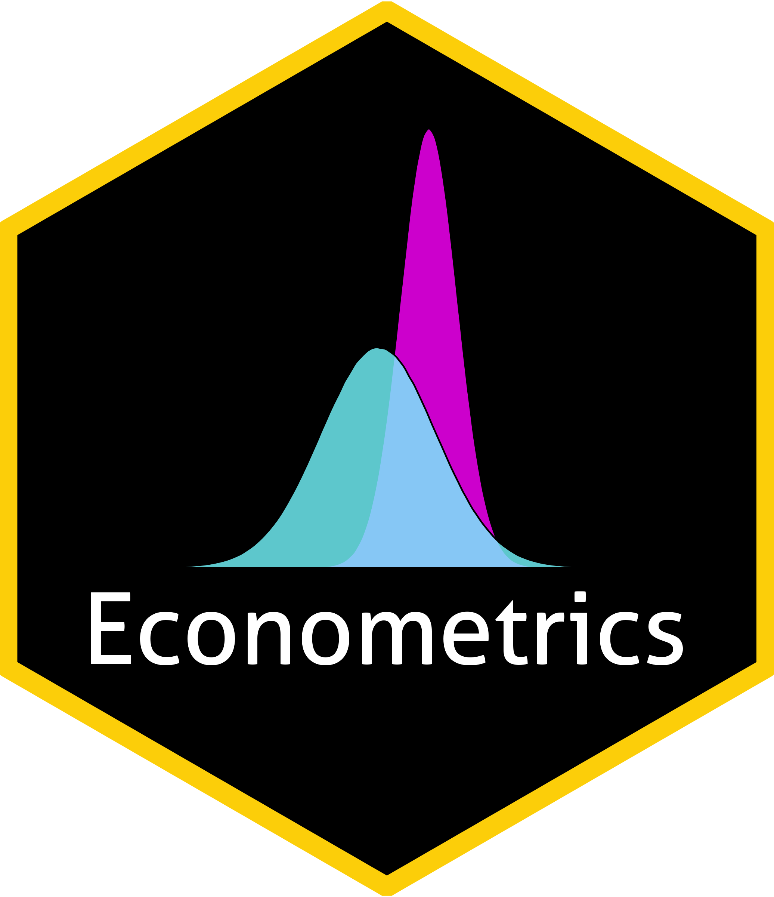
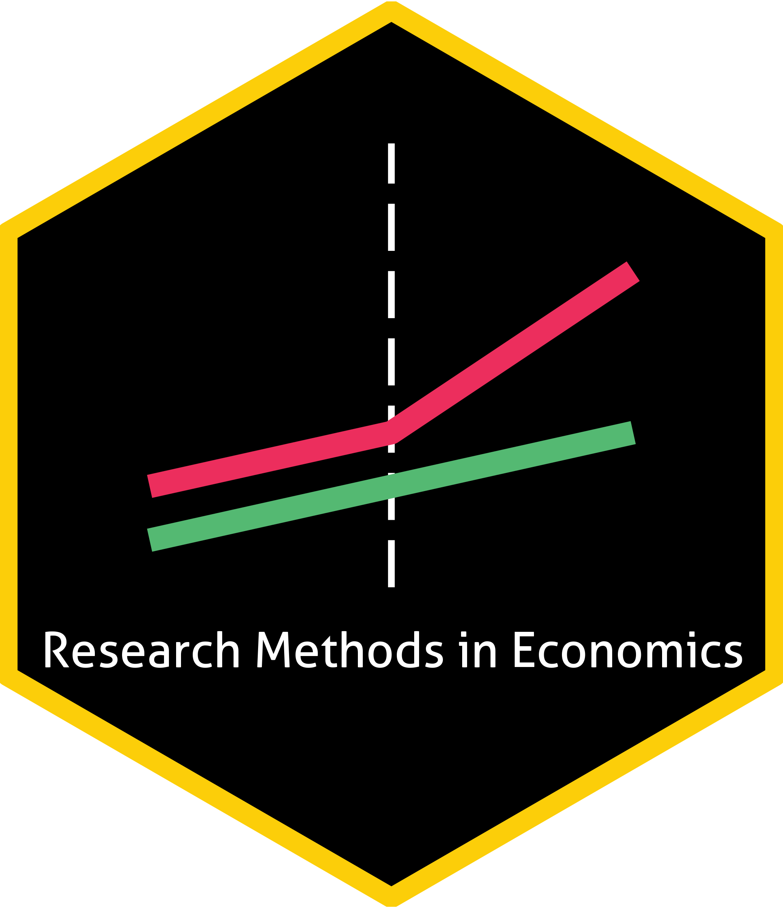
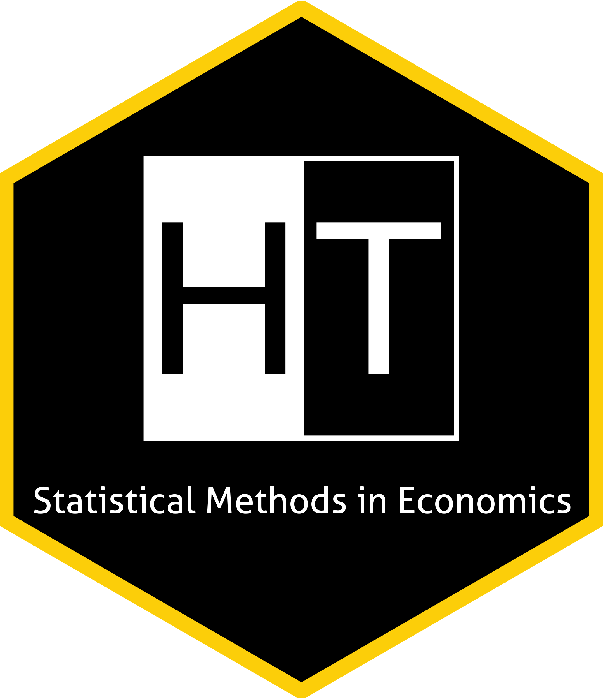

Teaching Experience
These are the logos I designed for the courses.
The code of the logos are available at github.com/zekiakyol/logos.





Istanbul Technical University, Solo Teaching Assistant
- Summer 2023 Economics (Undergraduate)
Exam organization for ~300 students - Spring 2023 Advanced Econometrics (PhD)
Problem sets - Spring 2023 Econometrics-II (Undergraduate)
R labs & Problem sessions - Spring 2023 Economics (Undergraduate)
Exam organization for ~2000 students - Fall 2022 Econometrics-I (Undergraduate)
R labs & Problem sessions - Fall 2022 Statistical Methods in Economics (Undergraduate)
R labs & Problem sessions - Fall 2022 Economics (Undergraduate)
Exam organization for ~2000 students - Summer 2022 Economics (Undergraduate)
Exam organization for ~300 students - Spring 2022 Research Methods in Economics-II (Master’s)
R labs & Problem sessions - Spring 2022 Econometrics-II (Undergraduate)
R labs & Problem sessions - Spring 2022 Economics (Undergraduate)
Exam organization for ~2000 students - Fall 2021 Research Methods in Economics-I (Master’s)
R labs & Problem sessions - Fall 2021 Econometrics-I (Undergraduate)
R labs & Problem sessions - Fall 2021 Mathematical Economics (Undergraduate)
Problem sessions - Fall 2021 Introduction to Prog. Lang. Python (Undergraduate)
Python labs - Fall 2021 Economics (Undergraduate)
Exam organization for ~2000 students - Summer 2021 Economics (Undergraduate)
Exam organization for ~300 students - Spring 2021 Research Methods in Economics-II (Master’s)
R labs & Problem sessions - Spring 2021 Econometrics-II (Undergraduate)
R labs & Problem sessions - Spring 2021 Intermediate Macroconomics (Undergraduate)
Problem sessions - Spring 2021 Economics (Undergraduate)
Exam organization for ~2000 students - Fall 2020 Research Methods in Economics-I (Master’s)
R labs & Problem sessions - Fall 2020 Econometrics-I (Undergraduate)
R labs & Problem sessions
Istanbul Technical University, Solo Instructor
- Summer 2023 Math Camp (Incoming PhD and Master’s students)
Proof techniques, real analysis, and linear algebra
Our Econometrics R labs and problem sets with Assoc. Prof. Aysegul Kayaoglu will be available at github.com/zekiakyol soon!